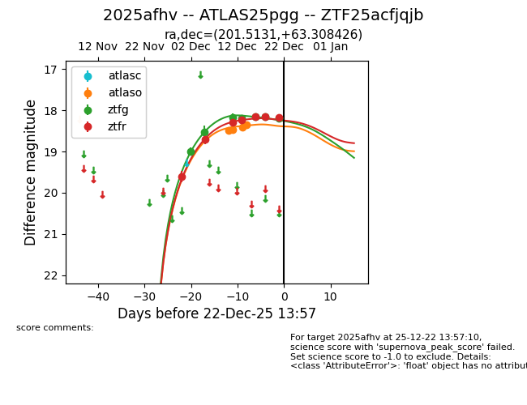
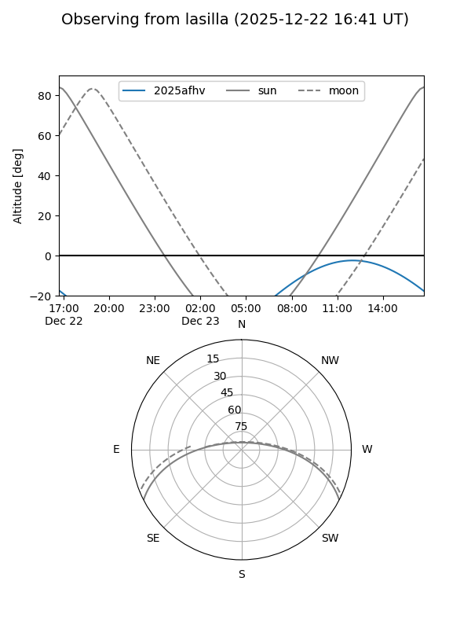
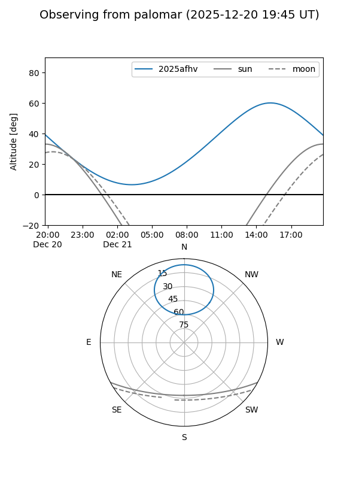
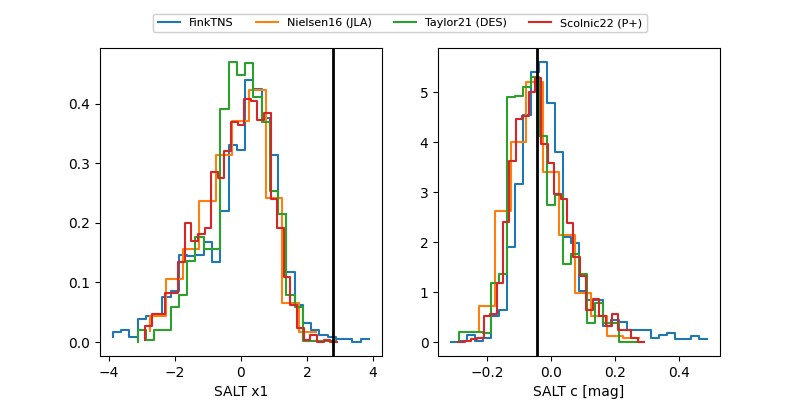

2025afhv
Target 2025afhv at 2025-12-21 14:37
Aliases and brokers:
FINK: fink-portal.org/ZTF25acfjqjb
Lasair: lasair-ztf.lsst.ac.uk/objects/ZTF25acfjqjb
ALeRCE: alerce.online/object/ZTF25acfjqjb
TNS: wis-tns.org/object/2025afhv
YSE: ziggy.ucolick.org/yse/transient_detail/2025afhv
alt names
ZTF25acfjqjb (ztf,fink_ztf)
2025afhv (tns,yse)
ATLAS25pgg (atlas)
Coordinates:
equatorial (ra, dec) = 201.5131,+63.30843
equatorial (HMS+DMS) = 13:26:03.16,+63:18:30.33
galactic (l, b) = (116.4261,+53.38041)
Flags:
Photometry:
last atlaso=18.34, ztfg=18.19, ztfr=18.17
4 atlaso, 7 ztfg, 7 ztfr detections
Lightcurve

Visibility


Additional plots
